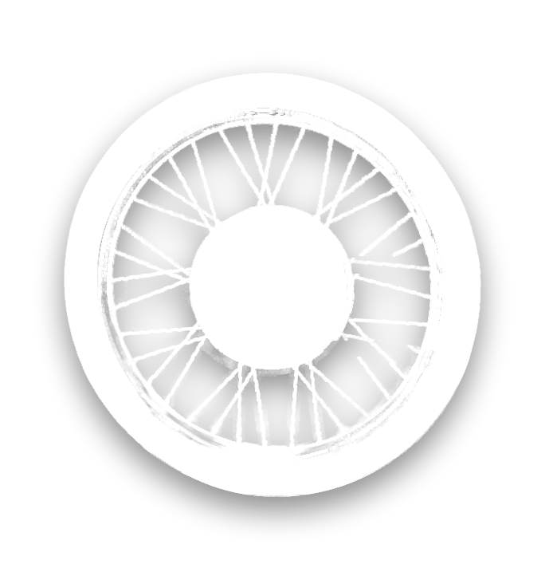
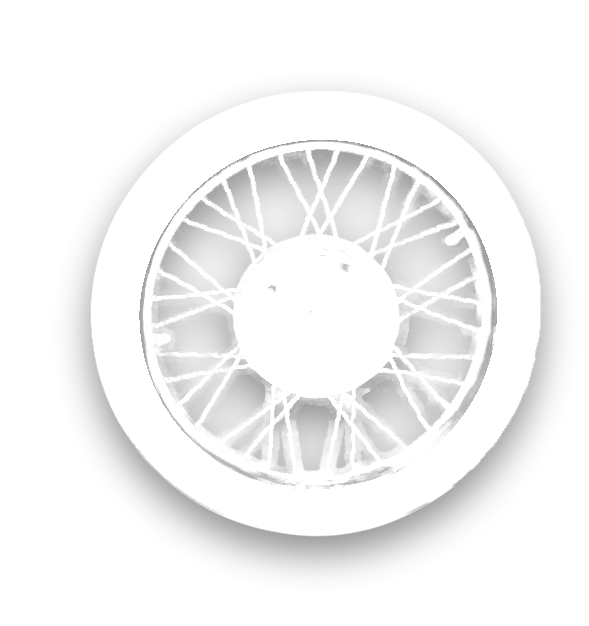
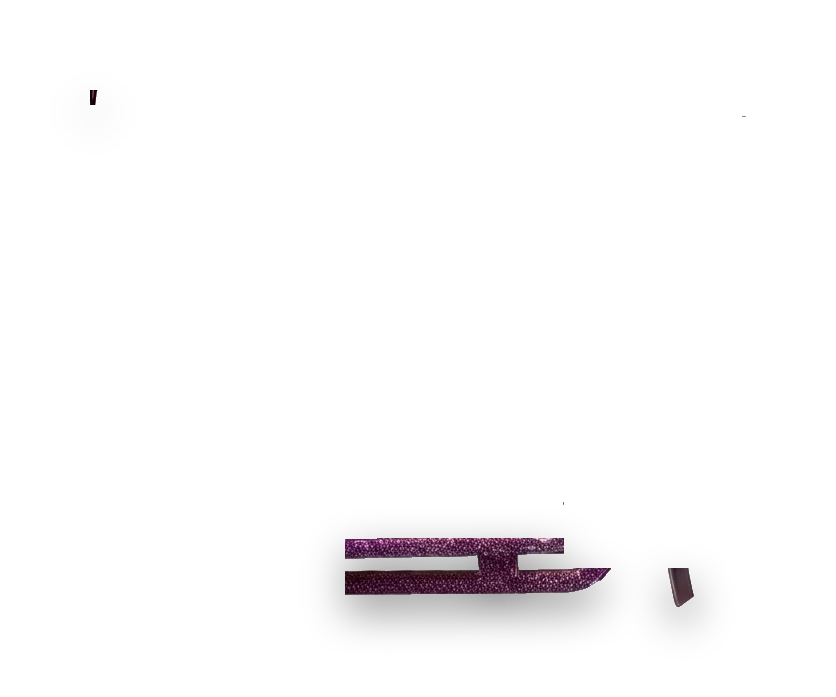
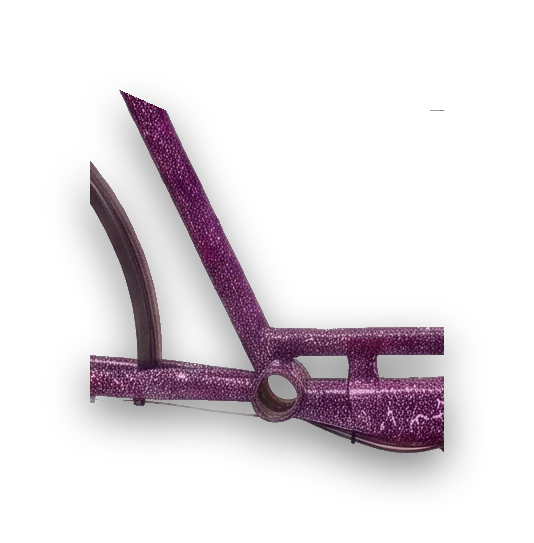
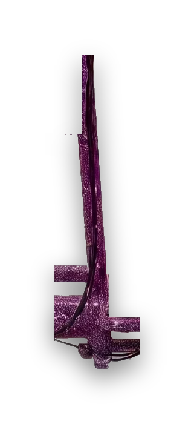
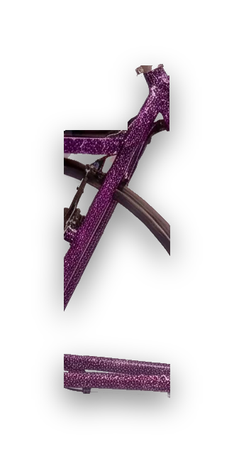
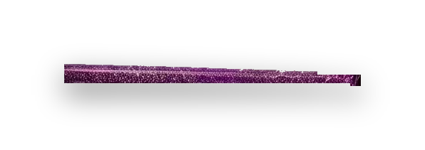
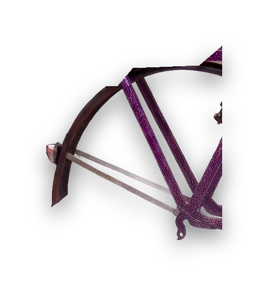
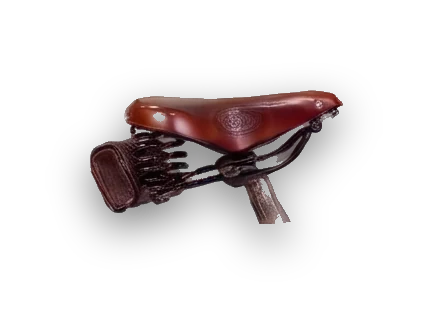
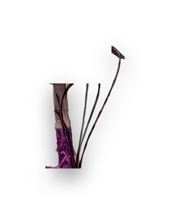
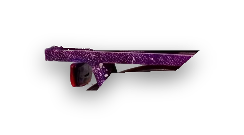
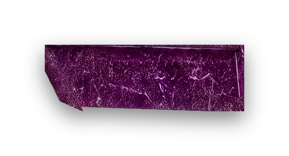
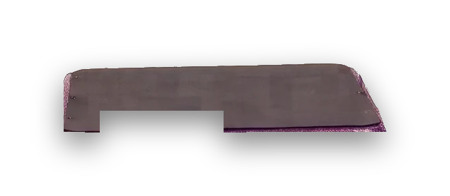
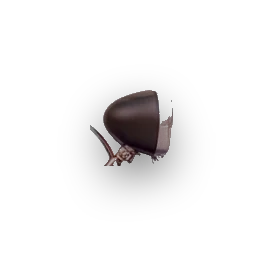
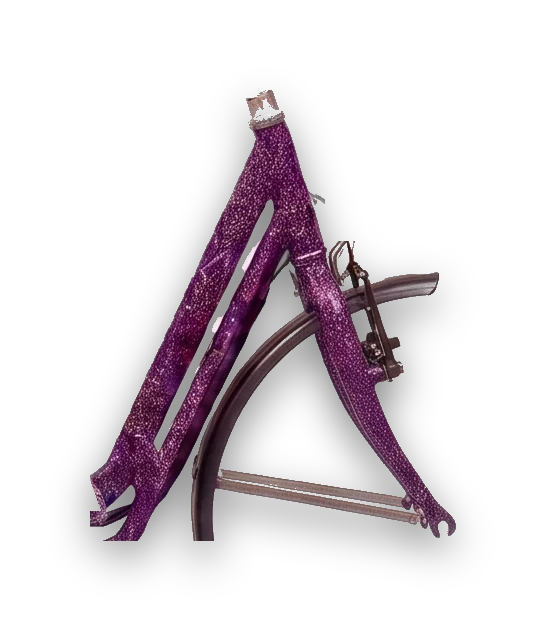
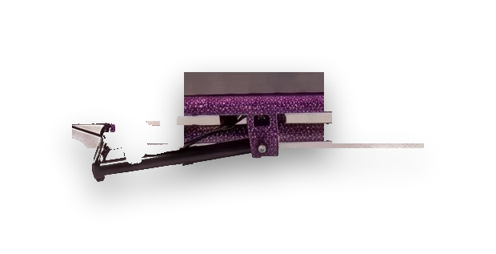
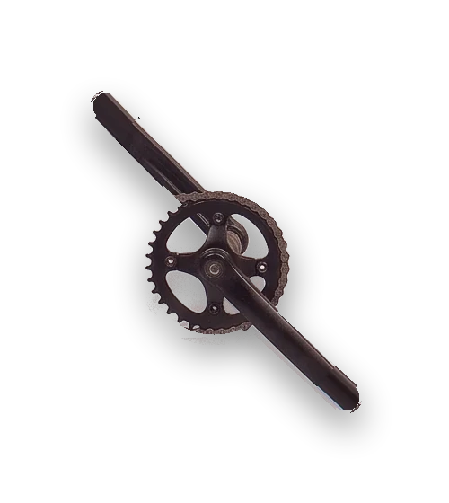
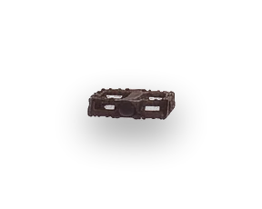
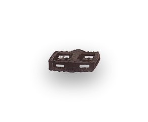
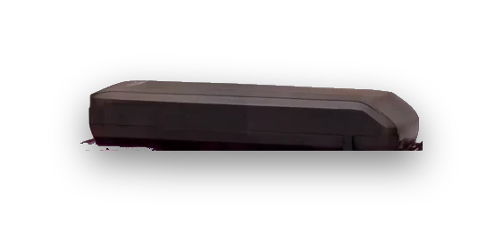
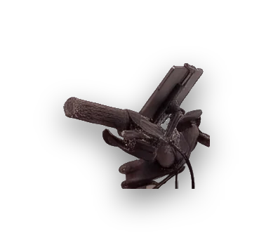
Portefølje · Aarhus
Sebastian Dammeyer
Speciale, elektronik, Claude-mods og cykler jeg selv har bygget. Scroll, så kører long johnen ud i min verden.
Scroll for at køre
01Speciale & universitet
Kvantitative metoder, forvaltningsret og mit speciale.
Se universitet
02Elektronik
Batteri, controller, lodning og ledningsføring. Alt det der får cyklen til at køre.
Se elektronik
03Claude, skills & mods
Tabletten på styret bliver til computeren: skills, plugins og små værktøjer jeg bygger.
Se projekter
04Mine cykler
Hjulet ruller ud som en samling af de cykler jeg har bygget og istandsat.
Se cykler
Speciale · Elektronik · Claude & mods · Cykler
Kør med piletasterne. Klik på et hus og gå ind.
Henter verdenen …